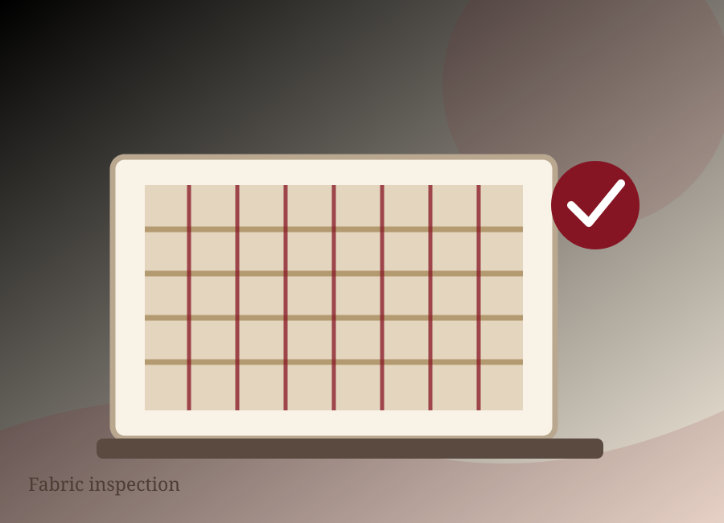

Understand the brief
Agree product use, composition, dimensions, colour, finish and customer expectations.
At Bismillah Textiles, quality is treated as an evolving process supported by in-house quality and process control, modern machinery, suitable dyes and chemicals, and experienced technicians.
Quality, environmental, social and security requirements are considered across production rather than only at the finished-goods stage.
Agree product use, composition, dimensions, colour, finish and customer expectations.
Use suitable yarns, dyes, chemicals and incoming requirements for the confirmed order.
Apply process controls through weaving, processing, printing, quilting, embroidery and stitching.
Assess final product details, packing and presentation against the approved specification.
Keep environmental, social and security expectations visible within management systems.
Quality is an evolving process, supported by experienced technicians and modern technology.

ISO 14001:2015 is published as valid until 06 June 2028. ZDHC Supplier to Zero, Level 1 acknowledgement is published as valid until 30 January 2027. Current scope should be confirmed from the linked official documents before procurement decisions.
Discuss quality needs ↗Certification dates and scope are shown from the legacy company information and should be rechecked with the company when a new programme is opened.
Environmental management certification published with validity to 06 June 2028.
Level 1 acknowledgement published with validity to 30 January 2027.
Experienced technicians and production technology support quality control through the route.